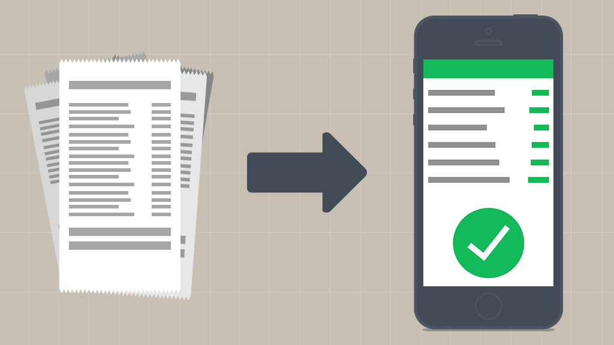

Home
Monday, March 9, 2020
SpendSense: Now in early access!
We're pleased to announce that the SpendSense application's main functions have been completed,
and is open for use! We're still improving functionality ahead of our official release, so stay tuned for updates!
Happy Spending, from the Virtualytics Team.

Friday, October 31, 2019
SpendSense is in Development
SpendSense is officially on track! The ability to manage your spending and track your budget will soon be here.
We can't wait to deliver an application that helps people like you save more money for what's really important in life.